Therapeutic
Colonoscopy
Principles
Polypectomy
FAQs
Equipment
A good snare.
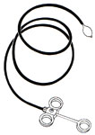
Hot biopsy forceps
- generally for polyps <5mm in size; destroys.
- also angiodysplastic lesions.
Polyp retrieval forceps (snare should do usually).
Principles of Electrosurgery
Diathermy creates heat
- this coagulates blood vessles and eases snare transection.
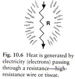
High-freq currents (up to 1 million x / sec)
- cf low-freq household currents (50c/s)
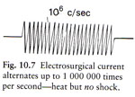
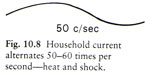
- thus no time for muscle / nerve depolarisation before alternation
again
- so no shock due to massive muscle contraction.
- thus not felt and no risk to skeletal muscle.
Coagulating currents are
intermittent high voltage pulses
- passes through dessicated layer
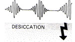
Cutting currents are
continuous low voltages.
- do not pass dessicated area, vaporise locally.
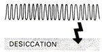
Blend is a combination of both.
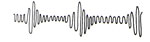
Tissue heats because it has high electrical resistence.
- if current spreads out and flows through a large tissue area, little
heating results
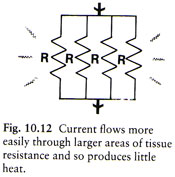
- effective diathermy relies on flow restriction to smallest possible
tissue area.
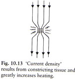
- hence little heat at plate, intense at a closed snare loop.
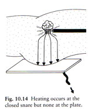
Electrode jelly is unnecessary at the power used for polypectomy.
Principles of Polypectomy
Want to cook the stalk before sectioning it.
- need to coagulate plexus of arteries and veins and the polyp stalk
core.
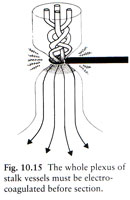
- will visibly whiten and steam as tissue boils.
Loop tightness is critical
- area of current density decreases as the square of snare closure (πr2)
- and heat increases as square of current density
- so overall heating increases as the cube of snare closure.
- slightly tighter closure produces
far greater current density / heat produced.
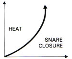
Conversely, because the closed snare loop is by far the
narrowest, the base and bowel wall should scarcely heat at all.
- hence polypectomy should have a very low perforation rate.
- safer to go slow at low current settings; increase if no visible
effect.
- beyond 15-20s, heat dissipation and bowel wall damage increases.
- use bursts of current.
- when starting, use only 2-3s bursts for close control, on lowest dial
setting with visible effect.
Cf heat produced is directly proportional to power setting on unit dial.
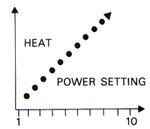
And directly proportional to time (ignoring dissipation)
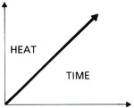
If your snare is too loose, tissue will heat slowly, too tight, and it
will burn through too fast.
- likewise, unfortunately in a large polyp, heat can dramatically
increase as the snare starts to close in.
In large stalks (>1cm), non-coagulation of vessels is also a risk.
- ie haemorrhage
- don't cheeswire the stalk prior to adequate coagulation.
- distance to closure mark of snare indicates stalk size
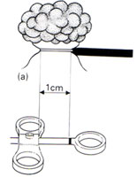
- have sclerotherapy injection ready, or inject prior to removal.
Polypectomy
Lassoo the polyp head.
- open loop fully, with plastic sheath a few mm in view also
- then manoeuvre only with
instrument controls / shaft.
- place over polyp head almost entirely by manipuating endoscope.
May help to start beyond polyp, pulling back until head in view and
into loop.
Can also try pushing backwards over a difficult polyp head.
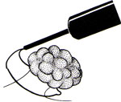
Snare at the narrowest part, usually near the top.
- providing a small segment of normal tissue for the pathologist.
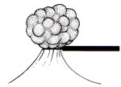
- in long stalks / possible malignancy, snare lower down.
Push the snare sheath against the stalk before closing
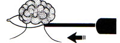
- this ensures the snare will be placed accurately.
- and won't simply be pulled off the polyp at closing.
Close gently; once tight and wrong may be difficult to release.
The Large or Sessile Polyp
Sessile / broad-based polyps are problematic, for reasons above.
Fortunately many sessiles are semi-pedunculated, so can be snared onto
an adequate pseudostalk.
Other lesions may need to be removed in pieces.
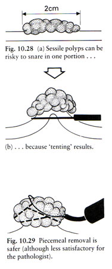
Once snared, if the mucosa moves along with the polyp, there is a risk
of tenting.
If polyp base is >1.5cm with stalk, take piecemeal.
- may be better in fit pt to undergo surgery, especially if thought
malignant (you may destroy the evidence by piecemeal removal).
There is a risk of leak current,
where current is lost into bowel wall where it meets polyp being
treated.
- minimise by moving polyp around during procedure to limit exposure to
just one area.
- pain will result (slight) if serious full-thickness heating of bowel
wall.
Remember that within 12cm of the anal verge, local proctological
surgery under GA is possible and probably better for difficult polyps.
Stalk Injection
Removes risk of unwanted bleeding.
Exceedingly easy.
Adrenaline 1-10ml 1:10,000 is safe but short lived
- use for short broad stalks, some sessile polyps, any bleeding point.
- inject around base, will see visible blanching.
- then transect about the upuper stalk
- handy when pt coagulopathic.
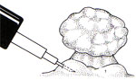
Add sclerosant where long stalked in equal volume to adrenaline.
- only indicated for long stalks, 1cm or more.
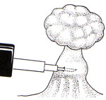
Small Polyps : Hot Biopsy
Some endoscopists just ignore them, thinking they aren't worth the worry
- actually 70% of small polyps prove to be adenomas.
- only 10% are hyperplastic / metaplastic.
- so they should be destroyed or removed.
Use the hot-biopsy.
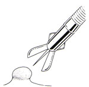
- grasp the polyp in the jaws, pull slightly to make a pseudopedicle
(like a small mountain).
- ensure insulating plastic is visible for safety
- now apply current for 2-3 seconds; it will head and coag at narrowest
part.
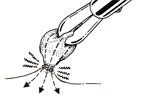
Extent of coag is seen as whitening, spreading half-way down from neck like snow on Mt Fuji
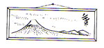
- this is enough to destroy the neck, while keeping bowel wall safe.
- pull, knowing that even if some head left, basal tissue and vessels
will be safely destroyed.
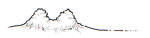
Heat produced will not harm histology in 95% of cases.
- polyps >5-7mm are unsuitable: base broader than contact area
- a small burn will occur at the surface of the polyp, with inadequate
damage at the base:
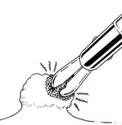
- you risk perforation if a long attempt is made to destroy suck polyps.
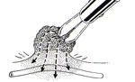
- STOP and snare.
Frequently Asked Questions
My large stalk-polyp doesn't appear to be cutting at all.
Go steady with bursts totally ~20s
If power setting high and still no effect, check:
- circuitry and connections, snare assembly.
- polyp stalk (snared? head of polyp trapped out of site?)
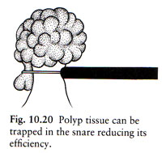
- can snare be positioned higher (thinner) up shaft?
I only get a frustrating bad view of
the polyp
Change pt position
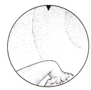
The polyp is in a bad position for
snare placement.
Rotate the instrument.
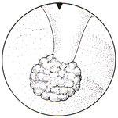
The snare is stuck!
Lift up over the polyp head and lift upstream with scope.
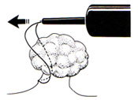
If still stuck, can insert a gastroscope / paed scope, then use biopsy
forceps to free it.
- can gut the snare off if necessary, leaving it in-situ to fall off or
to have another go at.
How do I recover this large polyp?
Polyps >3cm can be difficult to get back through anus
- get pt to bear down to relax sphincter (cover the area first!)
Have the pt squat and bear down ("the minor embarrassment is well worth
while for the rapid delivery that invariably results")
If dropped in the rectum, a proctoscope may help.
The pt has multiple polyps.
90% of pts have 1-2. Very uncommon for >5,
- unless they have a syndrome.
- often multiple polyps (meta/hyperpastic, Peutz-Jeghers, juvenile,
lymphoid, lipomatous, inflammatory) are not neoplastic.
- so await histology before undertaking heroic action.
If the pt truly has >6 polyps and no syndrome, very carefully
inspect the whole bowel with washable blue ink technique.
Tedious business, but remove and retrieve if required.
Where am I? This looks malignant and
they may need surgery.
Using colonoscope cms is unreliable.
Need to tattoo with Indian ink.
The pt is bleeding!!
Occurs in <1-2% of polypectomies.
- where a large polyp removed, warn of delayed risk at 1-14 days.
Endoscopic view is magnified, a slow ooze can appear dramatic.
Stop bleeding.
- 5-10ml of 1:10,000 adrenaline sub-mucosally useful.
- can resnare and strangulate a partial stalk then coag.
If still going, alert surgical team, perform arteriogram intervention.
The pt perforated!
This is rare. Occasionally follows a difficult procedure.
Usually can be managed conservatively after consultation (?).